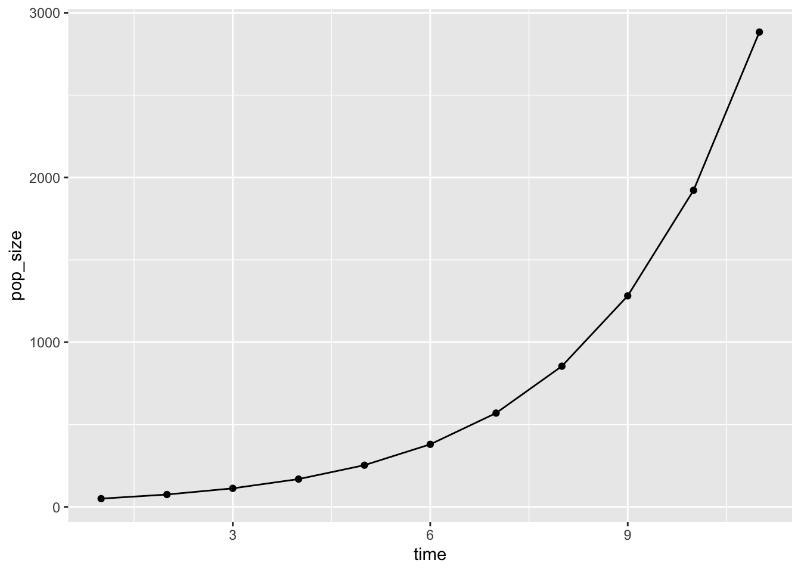
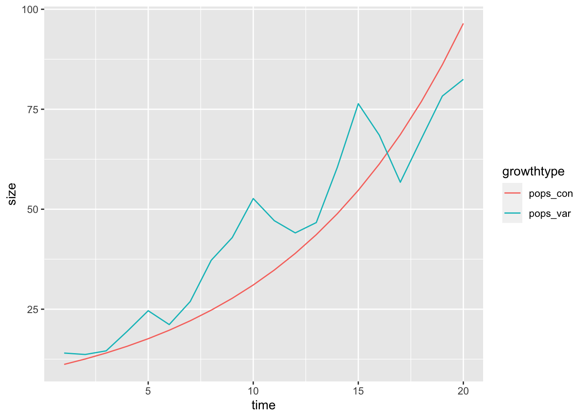
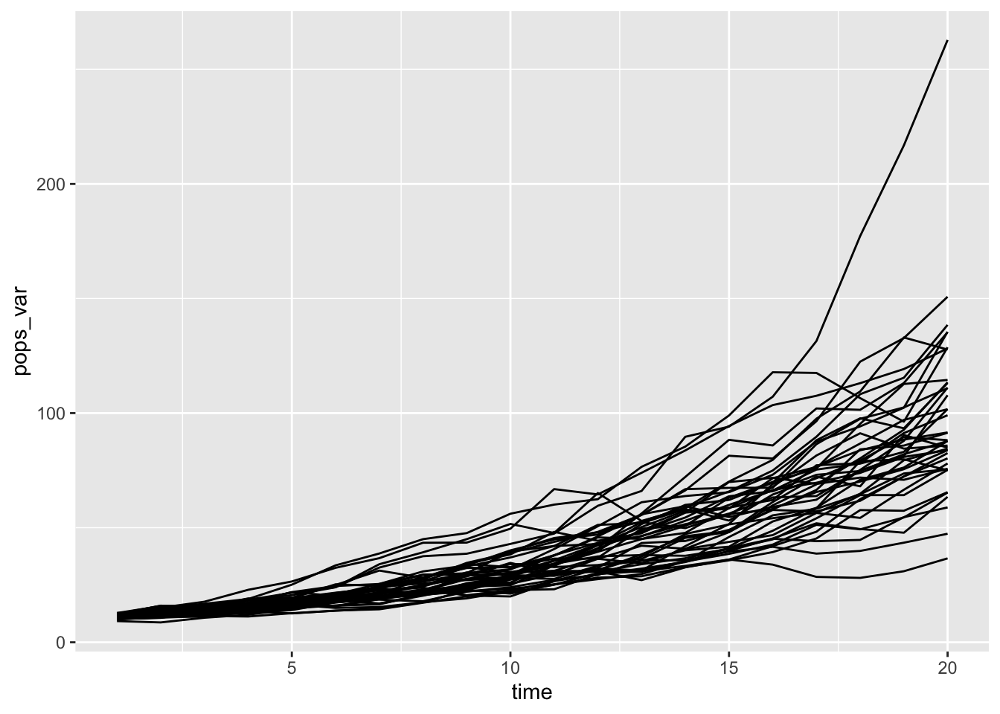
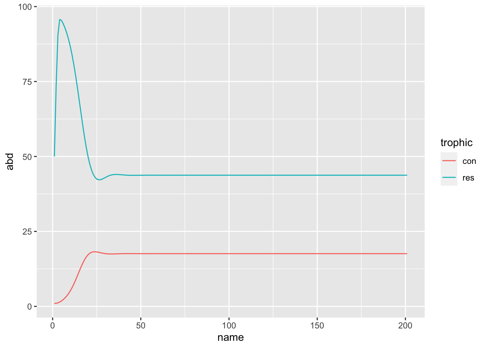

Today I want to tell you about an approach for functional programming in R – and then apply it to studying population growth!
I have been studying some of the purrr functions lately. They are a useful family of functions for performing two common tasks in R: manipulating lists and altering the behaviour of functions. If you’d like a high-quality guide to this group of functions, set aside some time to work through Jenny Bryan’s excellent tutorial and Hadley Wickham’s chapter on Lists.
I was inspired to write this post after reading This StackOverflow question by jebyrnes. He asks:
I want to simulate a timeseries of something like population growth. […] I feel like there has to be a dplyr or tidyverse way to do this (as much as I love my for loop).
and there is! An answerer mentioned purr::accumulate(). In this post I’m going to expand on the approach they suggest. accumulate, and its twin reduce, are examples of functionals – functions that take functions as their arguments, and manipulate their behaviour in some way. purrr::accumulate is a wrapper around to Reduce from the base package, with the argument accumulate = TRUE.
accumulate is normally used when you want to do some cumulative function all along a vector. For example, we can reproduce the cumulative some of a vector like this (same output as cumsum(1:10))
library(purrr)
accumulate(1:10, ~ .x + .y) [1] 1 3 6 10 15 21 28 36 45 55.x and .y here are just a handy way of writing “the first thing” and “the second thing”. Then accumulate goes down the vector 1:10, and takes the first thing (1) adds it to the second thing (2) and so on….
However, this is not the only way it works! accumulate can take an initial value (.init) and can work on a dummy variable. If its starting function does nothing but modify an element, it will just keep modifying it: so instead of f(1, 2), f(f(1, 2), 3) we get f(.init), f(f(.init)) etc:
dummy <- numeric(10)
dummy [1] 0 0 0 0 0 0 0 0 0 0accumulate(dummy, ~ .* 1.5, .init = 50) [1] 50.0000 75.0000 112.5000 168.7500 253.1250 379.6875 569.5312
[8] 854.2969 1281.4453 1922.1680 2883.2520Clearly, the 0s are not involved in any calculation (the answer would be 0!). instead, you just get the starting value multiplied by 1.5 each time!
This already suggests an awesome biological interpretation: logistic population growth.
pop_size <- accumulate(dummy, ~ .* 1.5, .init = 50)
library(ggplot2)Warning: package 'ggplot2' was built under R version 4.1.2library(dplyr)Warning: package 'dplyr' was built under R version 4.1.2data_frame(time = 1:11, pop_size) %>%
ggplot(aes(x = time, y = pop_size)) +
geom_point() + geom_line()Warning: `data_frame()` was deprecated in tibble 1.1.0.
Please use `tibble()` instead.
This warning is displayed once every 8 hours.
Call `lifecycle::last_lifecycle_warnings()` to see where this warning was generated.
On thing I like about this is that is is to much easier to look at – it look like the common biological equation for population growth:
\[ N_{t+1} = r*N_t \]
Stochastic population growth
In the original question, jebyrnes asked if parameters could be allowed to vary over time. Here is a way of allowing that to happen. We have to get a bit more abstract, and write a function which takes both population growth rate lambda and the population at time Nt as inputs
exp_growth <- function(lambda, Nt) lambda * Nt
set.seed(2016-12-01)
pop_functions <- data_frame(time = 1:20,
lambda_con = 1.12,
lambda_var = 1.12 + rnorm(20, 0, 0.2)) %>%
# make a list of functions
mutate(fns_con = map(lambda_con, ~ partial(exp_growth, lambda = .x, .lazy = FALSE)),
fns_var = map(lambda_var, ~ partial(exp_growth, lambda = .x, .lazy = FALSE)))Warning: The `.lazy` argument is soft-deprecated as of purrr 0.3.0.
Please unquote the arguments that should be evaluated once and for all.
# Before:
partial(fn, u = runif(1), n = rnorm(1), .lazy = FALSE)
# After:
partial(fn, u = !!runif(1), n = !!rnorm(1)) # All constant
partial(fn, u = !!runif(1), n = rnorm(1)) # First constant
This warning is displayed once per session.head(pop_functions)# A tibble: 6 × 5
time lambda_con lambda_var fns_con fns_var
<int> <dbl> <dbl> <list> <list>
1 1 1.12 1.40 <prrr_fn_> <prrr_fn_>
2 2 1.12 0.974 <prrr_fn_> <prrr_fn_>
3 3 1.12 1.07 <prrr_fn_> <prrr_fn_>
4 4 1.12 1.33 <prrr_fn_> <prrr_fn_>
5 5 1.12 1.26 <prrr_fn_> <prrr_fn_>
6 6 1.12 0.859 <prrr_fn_> <prrr_fn_>Now we have, instead of one function, many tiny little functions which each convert between time steps. The function purrr::partial() is handy for _partial_ly filling in the arguments of a function. Here it sets the value of the population growth rate between generations (lambda), and leaves us with a function that only needs one value, the population size.
How do we run these little functions? We need yet another function – this time, a function that takes two functions and runs the second on the first:
run_both <- function(.x, .y) .y(.x)Applying this function will let us run all the functions held in pop_functions. All we need to supply is the starting number of individuals for each population:
simulated_growth <- pop_functions %>%
mutate(pops_con = accumulate(fns_con, run_both, .init = 10)[-1],
pops_var = accumulate(fns_var, run_both, .init = 10)[-1])
simulated_growth %>%
select(time, starts_with("pops")) %>%
tidyr::gather("growthtype", "size", -time) %>%
ggplot(aes(x = time, y = size, colour = growthtype)) + geom_line()
rerun(40, {data_frame(time = 1:20,
lambda_var = 1.12 + rnorm(20, 0, 0.1)) %>%
# make a list of functions
mutate(fns_var = map(lambda_var, ~ partial(exp_growth, lambda = .x, .lazy = FALSE)),
pops_var = accumulate(fns_var, run_both, .init = 10)[-1]) %>%
select(time,lambda_var, pops_var)}) %>%
bind_rows(.id = "sim") %>%
ggplot(aes(x = time, y = pops_var, group = sim)) + geom_line()
Predators and Prey
I found, to my delight, that this approach works for more complicated objects than mere single numbers. We can, for example track a pair of numbers – say, the abundances of a predator and a prey!
I’m a community ecologist, and so my favourite bedtime story is the tale of the Logistically Growing Resource and the Predator:
\[ R_{t+1} = R_t \times (1 + r \times (1 - R_t/K)) - P \times a \]
\[ P_{t+1} = P_t \times (1 - m + c \times R_t \times a) \]
res_cons <- function(vec, m, r, K, a, c){
out1 <- vec[["res"]] * (1 + r * (1 - vec[["res"]] / K ) - vec[["con"]] * a)
out2 <- vec[["con"]] * (1 - m + c * vec[["res"]] * a)
c("res" = out1, "con" = out2)
}
paper_mod <- partial(res_cons, r = 1, K = 100, m = 0.21, c = 0.15, a = 0.032)
library(tidyr)
accumulate(1:200, ~ paper_mod(.x), .init = c("res" = 50, "con" = 1)) %>%
tibble::enframe(.) %>%
mutate(res = map_dbl(value, "res"),
con = map_dbl(value, "con")) %>%
select(-value) %>%
gather(trophic, abd, -name) %>%
ggplot(aes(x = name, y = abd, colour = trophic)) + geom_line()
# ggplot2::ggsave(here::here("posts/population-growth-functional-programming/fig.png"))
So, is this useful?
I wonder if this might be an interesting pedagogical tool. I feel like it might place the emphasis a bit differently to for-loops. Perhaps a for loop emphasizes the passage of time – how, at each time step (each i for example) certain things happen in a certain order (the Resource grows, the Predator kills some, then some predators die, etc). On the other hand, I feel like the functional programming approach emphasizes how a population (or pair of populations) is transformed. Each little function has some parameters – which are either, constant, varying, and/or influenced by something besides population size – and each little function does only one thing – transform the population between one time step and the next.